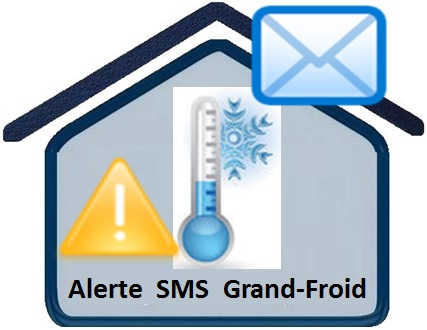

Mentions légales
Editeur du service :
Association ADILEOS
8 Rue Maurice Berteaux
92 130 Issy-Les-Moulineaux
Mail : adileos@doc-depot.com
• Identification R.N.A. : W923004894
• No de parution : 20140016
• Département (Région) : Hauts-de-Seine (Île-de-France)
• Lieu parution : Déclaration à la sous-préfecture de Boulogne-Billancourt.
Opérateur du service : OVH
Directeur de publication : Jean Michel Cot
Protection des données personnelles : Le service doc-depot.com est déclaré auprès de la Commission Nationale de l'Informatique et des Libertés sous le n° 1778307. Conformément à l'article 34 de la loi Informatique et Libertés n° 78-17 du 6 janvier 1978, vous pouvez accéder aux informations nominatives vous concernant, et les faire rectifier ou supprimer, en écrivant à Adileos
Copyright : Tous les éléments du présent site web sont protégés par le droit d'auteur. A ce titre, toute reproduction, représentation, utilisation, adaptation, modification, incorporation, traduction, commercialisation, partielles ou intégrales des éléments contenus dans ce site, sans l'autorisation écrite préalable d’ADILEOS, est interdite.
Conditions d’utilisation
Ce site est dédié exclusiement aux personnes précaires.
Conditions générales du service
Préambule
Les présentes conditions générales déterminent les règles d’accès au service « doc-depot.com/alerte.php » et ses conditions d’utilisation que tout utilisateur reconnait accepter, sans réserve, du seul fait de sa connexion au site.
Les conditions ont force obligatoire entre l’utilisateur et ADILEOS relativement à l’utilisation du Service. Il est important de prendre connaissance de ces conditions attentivement. Les conditions générales s’appliquent à tous les utilisateurs du service.
Pour utiliser le service, l’utilisateur doit préalablement, accepter ces conditions.
L’utilisation du service vaudra acceptation des présentes conditions.
Nous vous conseillons d’imprimer ou d’enregistrer localement une copie de ces conditions pour vos archives.
1.Définitions
Service : service « Doc-depot.com/alerte.php » est un service gratuit d'alerte sur les conditions météorologiques à destination des populations précaires.
Site : site internet « Doc-depot.com/alerte.php »
Utilisateur : toute personne physique vivant en milieu non protégé.
Les utilisateurs ont l’utilisation pleine et entière de l’ensemble des fonctionnalités du service.
2. Objet
Le service permet en renseignant un numéro de téléphone et un numéro de département de recevoir gratuitement des alertes concernant les conditions météorologiques pouvant impacter fortement la vie et la sécurité des personnes vivant dans la rue.
3. Conditions et modalités de souscription et d’utilisation du service
3.1 Conditions de souscription au service
La souscription du service est réservée aux personnes physique(s), à titre individuel, majeurs capable, pour les besoins non professionnels, vivants dans la rue :
3.2 Conditions d’utilisation du service
L’utilisateur est une personne physique.
br>
Pour accéder au service, l’utilisateur doit disposer :
Soit
-d’un accès à un ordinateur et accès internet ;
-d’un navigateur compatible (La liste des navigateurs compatibles est fournie dans le paragraphe Conditions d’utilisation).
<
Il appartient à l’utilisateur de vérifier la compatibilité de la configuration de l’équipement avec les solutions technologiques déployées par l’association sur ses serveurs et son site.
Les équipements et abonnements nécessaires pour accéder à internet sont et demeurent à la charge de l’utilisateur.
Soit depuis son propre téléphone portable
3.3 Modalités de souscription au service par le bénéficiaire
La souscription au service est .....................
5.3.2 Suppression de compte
...........................;; au bout d'un an
ou par l'envoi du texte "stop"
6. Sécurité, intégrité et confidentialité des documents
Dans le cadre du Service, le site met en œuvre les moyens nécessaires à assurer la sécurité, l’intégrité et la confidentialité des données stockées.
Toutefois, le site pourra être amené à bloquer l’accès au service ou à lever la confidentialité des documents sur demande des autorités judiciaire ou administratives compétentes.
La technologie mise en œuvre par Doc-depot.com n’utilise pas les « cookies ».
ADILEOS ne transmet aucune information ou document à aucun destinataire, sauf sur requête des autorités judiciaires dument mandatées.
9. Règlementation informatique et libertés
Le site et l’utilisateur s’engagent réciproquement à respecter la règlementation relative à la protection des données à caractère personnel et notamment la loi n°78-17 du 6 janvier 1978 modifiée relative à l’informatique, aux fichiers et aux libertés.
10. Responsabilité d’ADILEOS
Le site est tenu à l’égard de l’utilisateur d’une obligation de moyens dans l’exécution du service correspondant aux normes et usages en la matière.
Le site ne sera responsable que des seuls préjudices directs résultant d’une faute lui est imputable. Il ne peut être tenu pour responsable d’aucune perte ou manquement dans l’accomplissement de ses obligations ayant pour cause la survenance d’un cas de force majeure telle que définie par les tribunaux français, ou de toute autre circonstance échappant à son contrôle raisonnable. Il en est de même en cas d’utilisation inappropriée par l’utilisateur telle qu’évoquée ci-dessus (obligations de l’utilisateur).
12. Modification, suspension, résiliation
12.1 / Modification du Service
Le site se réserve le droit d’adapter ou de modifier à tout moment les caractéristiques du Service, notamment afin de prendre en compte des évolutions juridiques et/ou techniques, et de proposer des extensions et des améliorations possibles du Service.
12.2 / Suspension et interruption du Service
Le site est tenu à l’égard du bénéficiaire d’une obligation de moyens dans l’exécution du service correspondant aux normes et usages en la matière.
Le site peut interrompre provisoirement, que ce soit partiellement ou intégralement, l’accès général au site et/ou au Service et/ou à l’une ou l’ensemble des fonctionnalités du Service notamment :
- si des travaux de contrôle, d’entretien, de maintenance, d’amélioration ou de réparation, de quelque nature que ce soit, s’avèrent nécessaires ;
- si une telle interruption s’avère utile ou nécessaire pour la sécurité du système ou en vue de garantir les intérêts du site et/ou son utilisateur ;
- si une telle interruption est requise ou souhaitable en vertu d’une disposition règlementaire ;
- en cas de force majeure telle que définie par les tribunaux français ;
- pour tout autre motif légitime
Le site sera tenu de mettre tout en œuvre, de façon raisonnable, afin de limiter les interruptions et pour aviser le titulaire et le ou les utilisateurs au préalable si possible, du début et de la durée de ces interruptions. Il peut néanmoins arriver que le service ou l’une ou l’ensemble de ces fonctionnalités soi(en)t interrompues sans que le titulaire n’ait pu être averti, notamment si un incident technique survient ou en cas de force majeure, entre autres suite à une grève ou à un autre incident que le site « Doc-depot.com » ne maitrise pas.
De même, l’interruption peut intervenir pour tous les utilisateurs, certains utilisateurs ou un seul utilisateur déterminé, s’il existe un risque potentiel que la sécurité soit mise en danger en raison d’une utilisation abusive ou illicite.
Enfin, le site se réserve le droit d’interrompre ou d’arrêter le Service et/ou l’une ou l’ensemble des fonctionnalités du Service, soit partiellement soit intégralement pour un utilisateur déterminé, chaque fois qu’il estime que c’est utile ou nécessaire pour la sécurité du système ou en vue de garantir les intérêts du site et/ou de l’utilisateur, notamment, mais pas de manière exclusive dans les cas suivants :
- si le site considère que le service et/ou l’une des ou l’ensemble des fonctionnalités du service ne sont pas adapté(e)s à l’utilisateur pour quelque raison que ce soit ;
- si l’utilisateur ne satisfait pas à ses obligations légales, règlementaires et/ou conventionnelles relatives au service ;
- si le site avisé d’un risque d’utilisation abusive ou illicite de l’un des ou des dispositif(s) donnant accès au service
12.3/ Désactivation du service
Q........
13. Réclamations
En cas de réclamation, l’utilisateur peut solliciter ADILEOS (voir mentions légales)
14. Langue applicable et Juridiction compétente
La présente convention est conclue en langue française. Le titulaire accepte expressément l’usage de la langue française durant la relation contractuelle. La présente convention est soumise à la compétence des juridictions françaises.